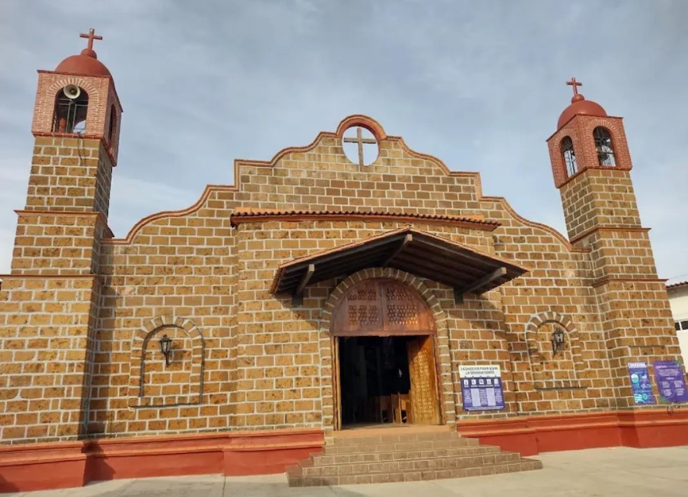
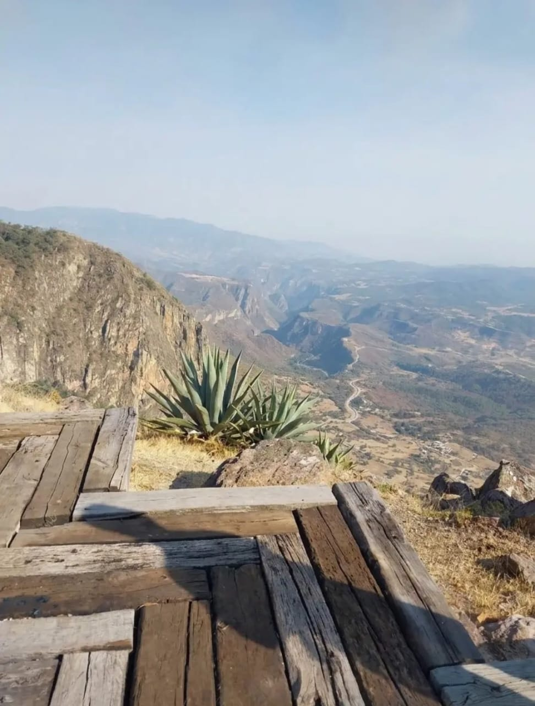
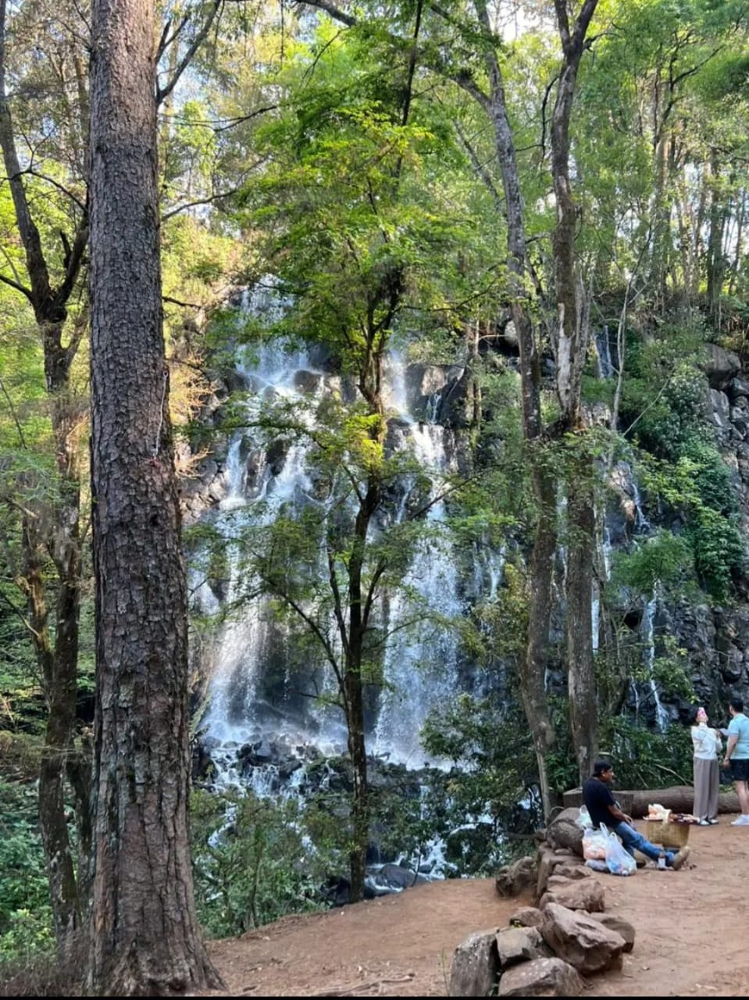
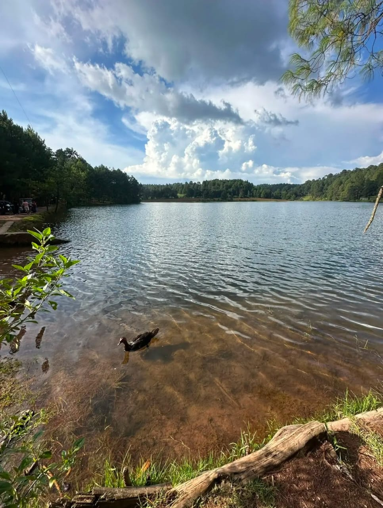
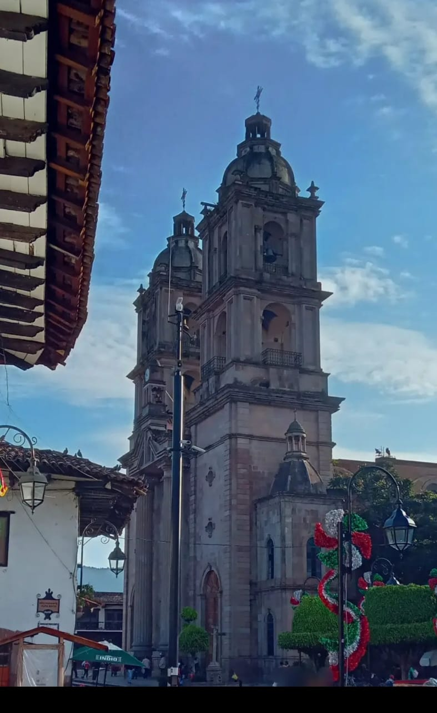
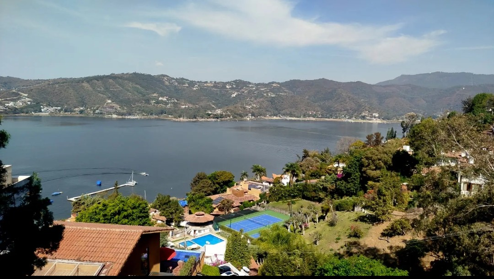

"Se ubica en una comunidad del municipio de Valle de Bravo, Estado de México, en una zona rodeada de montañas y vegetación. Las iglesias de este tipo forman parte de las localidades tradicionales de la región."

"Se encuentra en una zona elevada y montañosa de la región de Valle de Bravo. Desde este tipo de miradores se pueden observar barrancas, cerros y valles que forman parte del paisaje natural del municipio."

"Se localiza en un entorno boscoso de la región, caracterizado por árboles, rocas y corrientes de agua. En Valle de Bravo existen espacios naturales de este tipo."

"Se encuentra en una zona natural rodeada de bosques. Corresponder a alguno de los cuerpos de agua de la región de Valle de Bravo."

"Se encuentra en la zona céntrica de Valle de Bravo, Estado de México.Es la Parroquia de San Francisco de Asís, uno de los edificios religiosos más representativos de la cabecera municipal."

"Se ubica en el municipio de Valle de Bravo, al poniente del Estado de México. Está rodeada de montañas, bosques y zonas habitadas, y forma parte del Sistema Cutzamala. Es uno de los principales atractivos turísticos de la región."